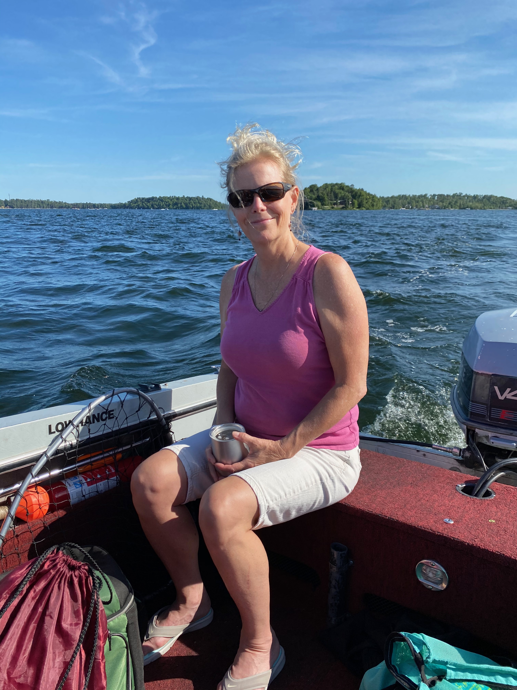

Sustainability consultant specializing in energy efficiency and occupancy wellness.
Visualization and data analyst with 20+ years of experience working in the areas of sustainability in the built environment and the health/wellbeing building occupants. With degrees in architecture and accreditations in LEED and WELL, my value is being a bridge between the technical and design fields to promote and deploy resilient, sustainability, and wellbeing strategies.
